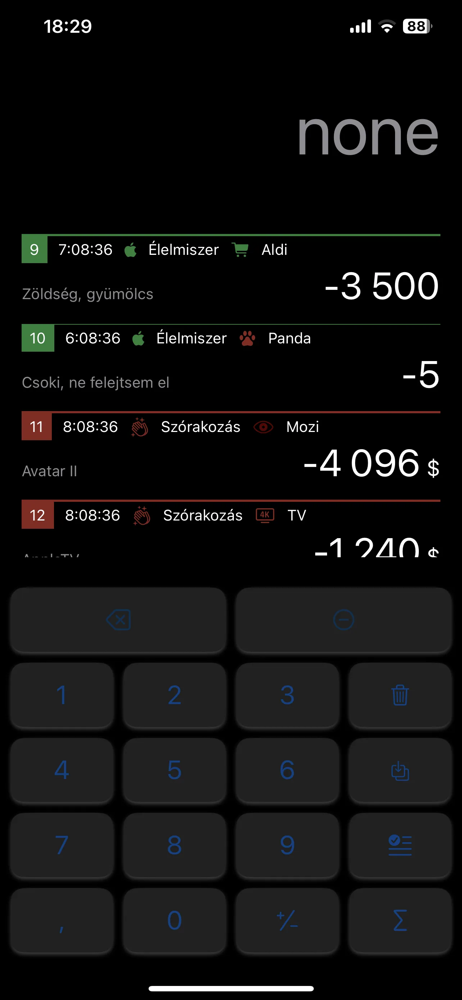
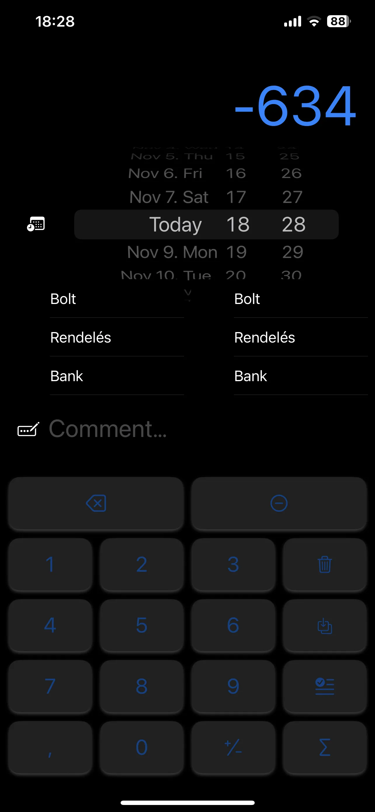

Your own spending record · In development
Know where
it went.
Cash in your pocket. Cards from different banks. Outlays brings your spending into one personal record, so you can see what you spent and exactly what it was for.

Everyday spending still includes cash
Cash still counts.
A spending tracker still has a place in a world of card payments. Many people use cash as well, and it is worth knowing exactly where those notes and coins went.
A purchase at the market, a cash payment on a trip, or a shared expense can be easy to forget. Outlays gives those payments a place alongside your card transactions, with the details that make sense to you.

One place for the details
Your own precise financial record.
Outlays maintains its own detailed internal financial ledger. Record cash purchases, bring in card spending, and keep the amounts, dates, categories and notes together.
-
Keep cash in the picture
Add the payments that do not appear on a bank statement, including the small everyday purchases you would otherwise have to remember.
-
Bring your accounts together
If you use several cards or bank accounts, keeping their transactions in one place makes your spending easier to review.
-
Keep the context
A number tells you how much. Categories and your own comments help you remember what the payment was actually for.
Your CSV. Your choice of columns.
Bring in the information you need.
Import transaction histories exported as CSV from Revolut or other banking systems. Configure how each file is read and map its columns to the fields in your Outlays record.
Different banks use different column names and layouts. The import mapping lets you decide which columns to bring in, how to use them, and which ones to leave out. You can keep a useful spending history without importing every field in the original export.
| Column in your CSV | How you could use it |
|---|---|
| Transaction date | The date of the entry |
| Amount | The transaction amount |
| Merchant or reference | A description, if you want to keep it |
| Additional bank-export fields | Leave out information you do not need |
Continue on your Mac
Synchronize your record with the companion desktop Mac application, so you can continue working with your spending history on a larger screen.
Work directly with Excel
Send entries straight to an Excel spreadsheet and continue with the tables, calculations and reporting workflow you already use.
Useful records. Focused reports.
Share the relevant part.
You may need a detailed private record and a much simpler report for someone else. Outlays lets you work from selected data and prepare a report containing the information you intend to share.
For a shared expense summary or a public report, include the relevant spending details and leave unnecessary or sensitive fields out. This gives you a way to share a useful account of the costs without passing on an entire bank export.
Outlays is currently in development. Screenshots show a work in progress.
Have a question or a spending workflow in mind? Get in touch